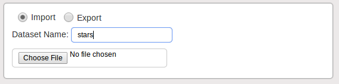

ASCII Data Viewer
This gadget allows you to construct a dataset from a formatted text file saved to your hard drive. After choosing a name for the dataset and selecting a text file, the gadget parses the text file and creates a new dataset. The text file should be formatted such that the first line contains the column names, each separated by a space. The following lines should each represent a data point, with each attribute, also separated by a space, representing the columns specified on the first line
Dataset to Text
Clicking on the 'Export' tab allows you to turn any dataset which is loaded to the dashboard into a formatted text file. Selecting a dataset and clicking the 'Export' button opens a new window. In this window, the column names of the dataset are listed first, with the attributes for each point listed row by row.